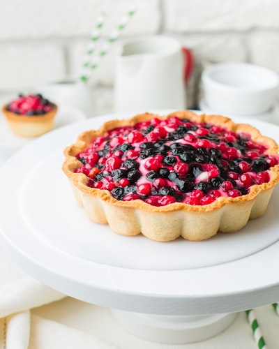
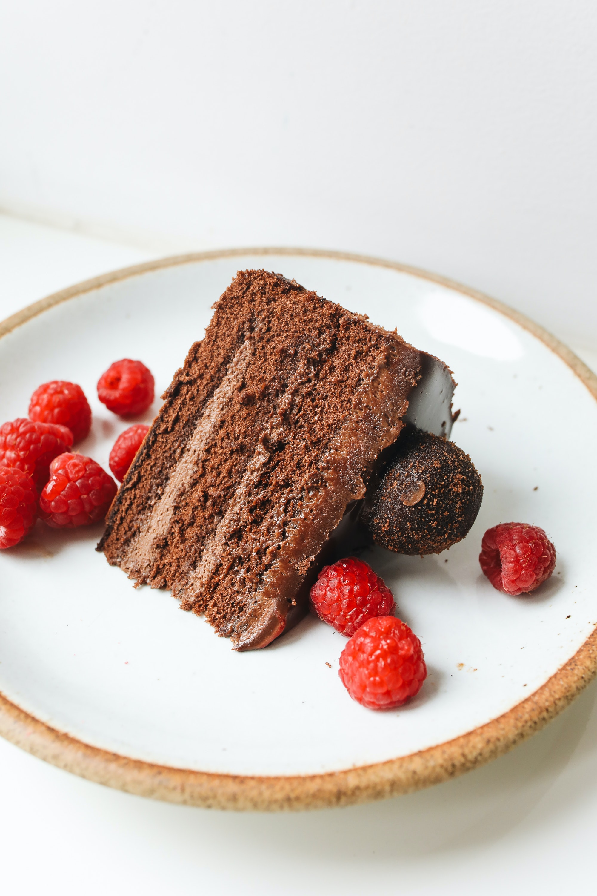

Principales Tartas
Tarta de Chocolate
Nuestra tarta de chocolate es una mezcla de las mejores materias primas (cacao, leche, huevo...) seleccionadas cuidadosamente, y un proceso de elaboración lento para potenciar todo el sabor.
Tarta de Zanahoria

Nuestra tarta de zanahoria está basada en la tradición y es el resultado de un proceso de elaboración y cocción lento para obtener el mejor producto posible.
Tarta de Bizcocho

La tarta de bizcocho de pastelería Cal tiene una base de bizcocho sobre la cual se aplica una capa de chocolate para finalizar la estructura con una capa de nata.
| Nombre de la tarta | Producto principal | Tiempo de elaboración | Tiempo de cocción | Calorías |
|---|---|---|---|---|
| Tarta de chocolate | Cacao | 20 minutos | 25 minutos | 359 |
| Tarta de zanahoria | Zanahoria | 35 minutos | 1 hora y 10 minutos | 305 |
| Tarta de chocolate y nata | Bizcocho | 3 horas | 1 hora | 350 |